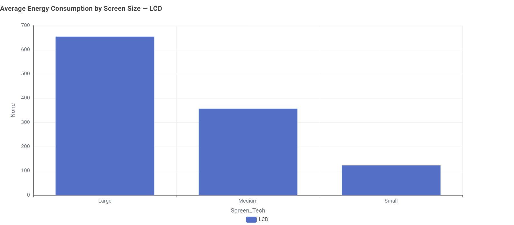
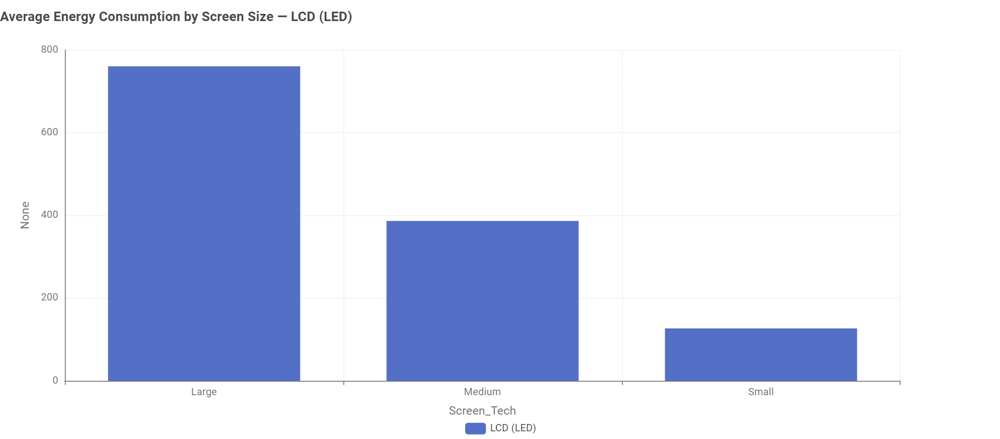
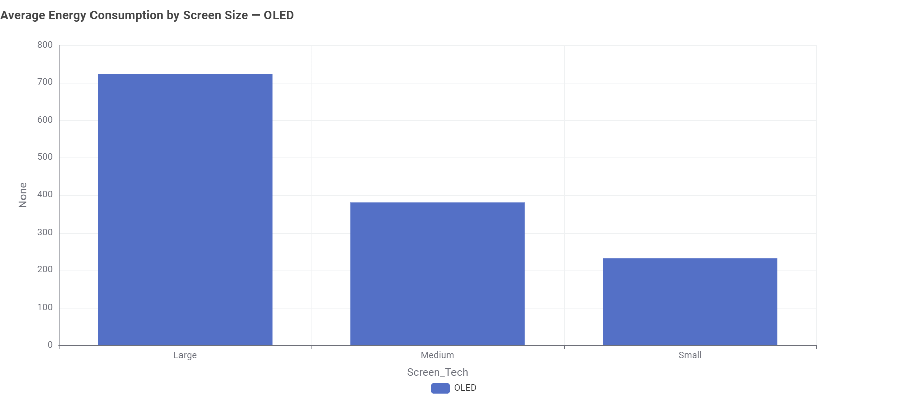
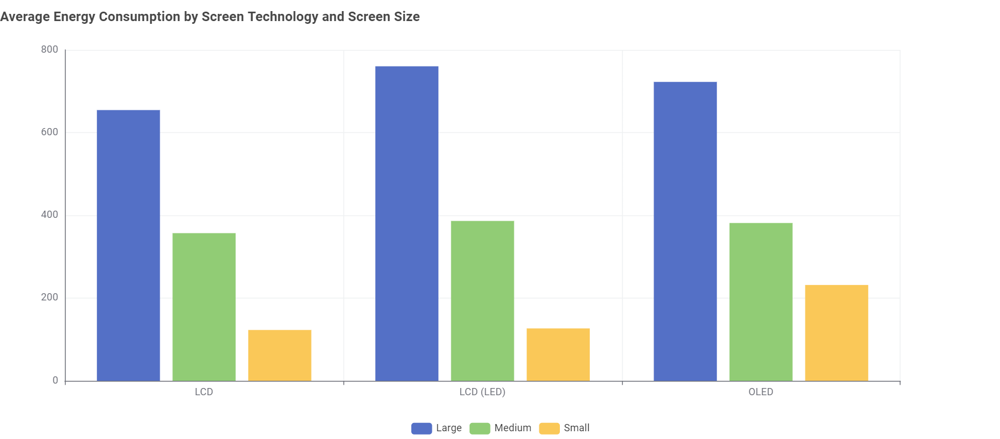

Screen Size
Larger screen categories show higher average labelled energy consumption in the dataset.
TELEVISION ENERGY
Televisions are a familiar part of everyday life, but different TVs can show different levels of labelled energy consumption. For Australian households considering a television, screen size and display technology are two important characteristics to compare.
WHY IT MATTERS
The energy use associated with a television can vary between models. In this analysis, we focus on screen size and display technology to explore how they relate to average labelled energy consumption.
Larger screen categories show higher average labelled energy consumption in the dataset.
Average labelled energy consumption also varies between display technologies.
The analysis compares the average labelled energy consumption of TVs across different combinations of screen size and display technology.
Understanding these differences can help consumers consider energy information alongside the features they want when comparing televisions.
THE DATA STORY
A larger television can offer a different viewing experience, but screen size is only one way televisions differ.
For this analysis, televisions are grouped into three screen-size categories: Small (<43"), Medium (43–65"), and Large (>65").
We compare three display technologies: LCD, LCD (LED), and OLED.
Let's explore what the data shows.
01 — LCD
The LCD data shows a clear pattern across the three screen-size categories.

The average labelled energy consumption is 122.85 kWh/year for Small LCD TVs, 356.95 kWh/year for Medium LCD TVs, and 654.52 kWh/year for Large LCD TVs. Larger screen categories are associated with higher average labelled energy consumption in the LCD data.
02 — LCD (LED)
The same overall pattern appears among LCD (LED) televisions.

The average labelled energy consumption is 126.66 kWh/year for Small LCD (LED) TVs, 386.46 kWh/year for Medium LCD (LED) TVs, and 760.35 kWh/year for Large LCD (LED) TVs. The Large category has the highest average, while the Small category has the lowest.
03 — OLED
OLED televisions also show increasing average labelled energy consumption across the screen-size categories.

The average labelled energy consumption is 231.65 kWh/year for Small OLED TVs, 381.47 kWh/year for Medium OLED TVs, and 722.60 kWh/year for Large OLED TVs. The Small OLED category has a higher average than the Small LCD and LCD (LED) categories.
SEE THE FULL PICTURE
Looking at the three technologies together makes the overall pattern easier to see. Across LCD, LCD (LED), and OLED, the Large category consistently has the highest average labelled energy consumption, while the Small category consistently has the lowest.
However, the averages are not identical within each screen-size category. The comparison below shows how the three technologies differ across Small, Medium, and Large TVs.

Average labelled energy consumption by screen size and display technology, measured in kWh/year.
| Screen Technology | Large | Medium | Small |
|---|---|---|---|
| LCD | 654.52 | 356.95 | 122.85 |
| LCD (LED) | 760.35 | 386.46 | 126.66 |
| OLED | 722.60 | 381.47 | 231.65 |
Across all three technologies, larger screen categories have higher average labelled energy consumption. At the same time, average values also vary between display technologies within the same screen-size category.
WHAT CAN TV BUYERS TAKE FROM THIS?
For Australian households comparing televisions, the data provides two useful points to consider.
First, screen size is associated with a clear pattern in average labelled energy consumption across all three technologies in this dataset.
Second, display technology also differs within the same screen-size categories. Considering both characteristics can provide more information when comparing television options.
Energy information can be considered alongside other factors, such as desired screen size and display technology, when making a television choice.
LOOK BEYOND THE SCREEN
The data shows a consistent relationship between screen size and average labelled energy consumption, while also revealing differences between display technologies.
For Australian households, understanding both can provide a clearer picture when comparing television options.
ENERGY TIPS
Turn off the television when it is not being used instead of leaving it running.
Use a comfortable brightness level rather than unnecessarily high display settings.
Consider energy efficiency information when comparing televisions before making a purchase.